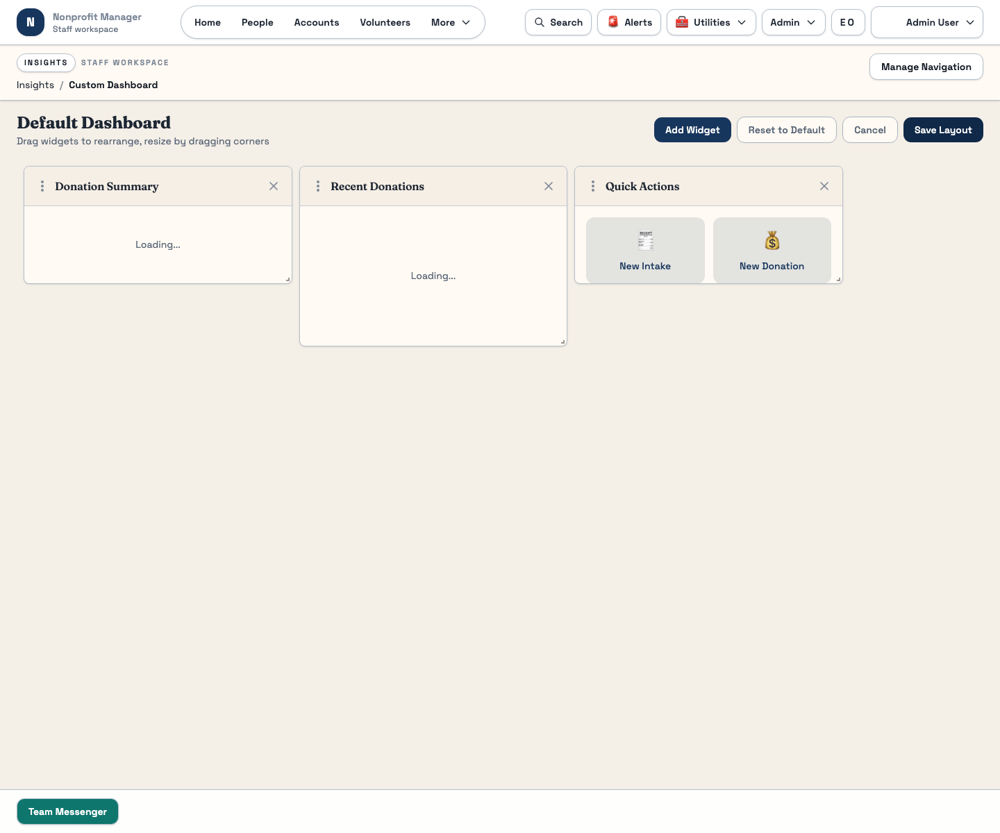

Dashboard and Analytics
Use summary views without losing track of detail work
Workbench overview and analytics views help staff prioritize work, spot trends, and personalize what they see first. This guide focuses on the stable quick lookup, pinned shortcuts, KPI, and custom widget workflows.
What this page is for
Use this guide when you need to understand what the Workbench Overview is telling you, change the metrics you see, or personalize a saved layout with widgets that match your role.
Before you start
- Be signed in with the staff account whose Workbench Overview settings you want to change.
- Know whether you need a quick overview, a custom layout change, or a report export.
- Remember that Workbench Overview changes usually affect your own working view first.
Steps
- Read the Workbench Overview top to bottom. Start with the overview header, then review quick actions, quick lookup, pinned shortcuts, priority cards, module summaries, KPI cards, charts, and any role-specific widgets.
- Use quick actions, quick lookup, and pinned shortcuts for speed. The Workbench Overview is not just for reading; it is also a fast way into common tasks.
- Use Customize view for lightweight changes. Adjust visible metrics from the overview when you only need small presentation changes.
- Use Customize Dashboard for layout changes. Open the custom dashboard page when you need to add widgets, move them, remove them, or reset the layout.
- Save intentionally. If you enter layout edit mode, save the layout when you are done or cancel if you were only experimenting.
- Use reports for deeper analysis. If you need filters, exports, grouped data, or scheduled delivery, move from Workbench Overview views into the Reports module.


What happens next
Once your Workbench Overview is set up, it becomes the fastest route into daily work. You should spend less time hunting through navigation and more time acting on the records that need attention.
Common mistakes
- Using Workbench Overview as a substitute for detailed reporting.
- Entering edit mode and forgetting to save or cancel intentionally.
- Assuming a widget layout problem is a data problem.
- Ignoring priority cards and then missing time-sensitive work.
Related guides
Need help?
If your metrics look stale or your layout behaves unexpectedly, note whether the issue is on the main Workbench Overview or the custom dashboard editor. That distinction usually tells your admin whether the problem is data-related or layout-related.